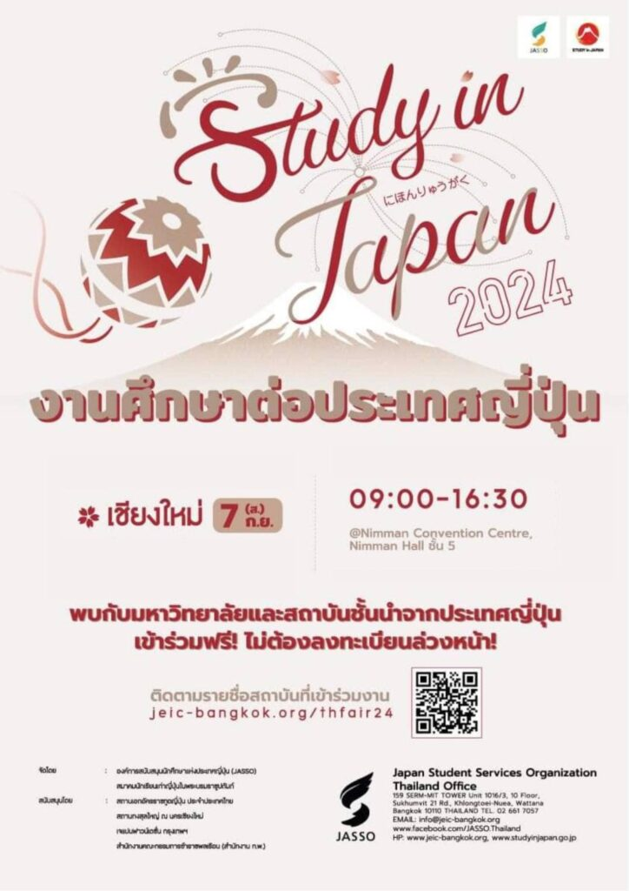

Study in Japan Fair 2024 โดย องค์การสนับสนุนนักศึกษาแห่งประเทศญี่ปุ่น (JASSO)
เนื้อหาตามประกาศ ณ วันที่เผยแพร่ โปรดตรวจสอบกำหนดการและเงื่อนไขก่อนดำเนินการ


องค์การสนับสนุนนักศึกษาแห่งประเทศญี่ปุ่น (JASSO) ขอเชิญชวนผู้สนใจศึกษาต่อในระดับอุดมศึกษาที่ประเทศญี่ปุ่น ร่วมงาน “Study in Japan Fair 2024”
ในวันเสาร์ที่ 7 กันยายน 2567 ตั้งแต่เวลา 9.00 – 16.30 น.
ณ Nimman Convention Center, Nimman Hall ชั้น 5
• ภายในงานพบกับมหาวิทยาลัยชั้นนำจากญี่ปุ่นกว่า 20 แห่ง ที่จะมาให้ข้อมูลโดยตรงเกี่ยวกับหลักสูตรการเรียนและวิธีการสมัครเรียน
• ร่วมฟังงานสัมมนาพิเศษ เรื่องเล่าประสบการณ์จากรุ่นพี่ผู้สำเร็จการศึกษาจากประเทศญี่ปุ่น พร้อมข้อมูลเกี่ยวกับทุนการศึกษา และการเตรียมตัวเพื่อสมัครเรียนในประเทศญี่ปุ่น
• นอกจากนี้ ยังมีผู้เชี่ยวชาญพร้อมตอบทุกข้อสงสัยเกี่ยวกับการศึกษาต่อในประเทศญี่ปุ่น
เข้าร่วมงานฟรี! ไม่มีค่าใช้จ่าย และไม่ต้องลงทะเบียนล่วงหน้า
แล้วมาพบกันในงาน “Study in Japan Fair 2024” เพื่อเตรียมพร้อมสู่การศึกษาที่ประเทศญี่ปุ่น!
2024 September 7th (Sat.), 09:00 – 16:30
@Nimman Convention : https://maps.app.goo.gl/ZymU3eTmAmULKrD4A
รายละเอียดเพิ่มเติม
https://www.jeic-bangkok.org/thfair24